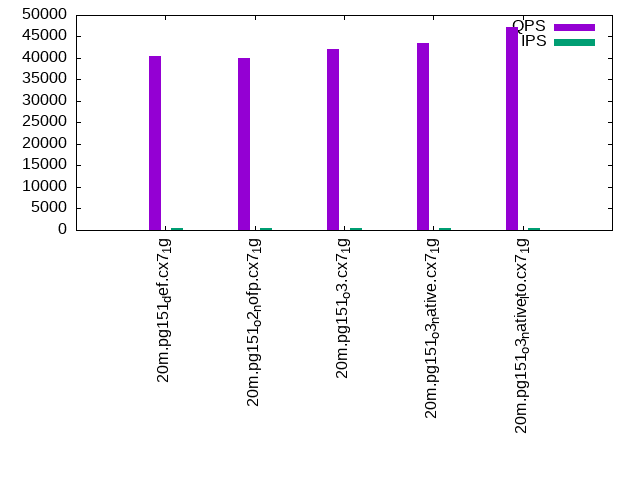

This is a report for the insert benchmark with 20M docs and 4 client(s). It is generated by scripts (bash, awk, sed) and Tufte might not be impressed. An overview of the insert benchmark is here and a short update is here. Below, by DBMS, I mean DBMS+version.config. An example is my8020.c10b40 where my means MySQL, 8020 is version 8.0.20 and c10b40 is the name for the configuration file.
The test server has 8 AMD cores, 16G RAM and an NVMe SSD. It is described here as the Beelink. The benchmark was run with 4 clients and there were 1 or 2 connections per client (1 for queries, 1 for inserts). It uses 4 tables, 1 per client. It loads 20M rows without secondary indexes, creates secondary indexes, loads another 20M rows then does 3 read+write tests for one hour each that do queries as fast as possible with 100, 500 and then 1000 writes/second/client concurrent with the queries. The database is cached by the OS but not by the database. Clients and the DBMS share one server. The per-database configs are in the per-database subdirectories here.
The tested DBMS are:
The numbers are inserts/s for l.i0 and l.i1, indexed docs (or rows) /s for l.x and queries/s for q*.2. The values are the average rate over the entire test for inserts (IPS) and queries (QPS). The range of values for IPS and QPS is split into 3 parts: bottom 25%, middle 50%, top 25%. Values in the bottom 25% have a red background, values in the top 25% have a green background and values in the middle have no color. A gray background is used for values that can be ignored because the DBMS did not sustain the target insert rate. Red backgrounds are not used when the minimum value is within 80% of the max value.
| dbms | l.i0 | l.x | l.i1 | q100.1 | q500.1 | q1000.1 |
|---|---|---|---|---|---|---|
| 20m.pg151_def.cx7_1g | 238095 | 837500 | 63291 | 40427 | 38878 | 37248 |
| 20m.pg151_o2_nofp.cx7_1g | 238095 | 804000 | 63492 | 40003 | 38133 | 36957 |
| 20m.pg151_o3.cx7_1g | 250000 | 804000 | 64309 | 42101 | 40119 | 38758 |
| 20m.pg151_o3_native.cx7_1g | 250000 | 837500 | 68966 | 43494 | 42215 | 40292 |
| 20m.pg151_o3_native_lto.cx7_1g | 263158 | 837500 | 70175 | 47184 | 45508 | 43644 |
This table has relative throughput, throughput for the DBMS relative to the DBMS in the first line, using the absolute throughput from the previous table.
| dbms | l.i0 | l.x | l.i1 | q100.1 | q500.1 | q1000.1 |
|---|---|---|---|---|---|---|
| 20m.pg151_def.cx7_1g | 1.00 | 1.00 | 1.00 | 1.00 | 1.00 | 1.00 |
| 20m.pg151_o2_nofp.cx7_1g | 1.00 | 0.96 | 1.00 | 0.99 | 0.98 | 0.99 |
| 20m.pg151_o3.cx7_1g | 1.05 | 0.96 | 1.02 | 1.04 | 1.03 | 1.04 |
| 20m.pg151_o3_native.cx7_1g | 1.05 | 1.00 | 1.09 | 1.08 | 1.09 | 1.08 |
| 20m.pg151_o3_native_lto.cx7_1g | 1.11 | 1.00 | 1.11 | 1.17 | 1.17 | 1.17 |
This lists the average rate of inserts/s for the tests that do inserts concurrent with queries. For such tests the query rate is listed in the table above. The read+write tests are setup so that the insert rate should match the target rate every second. Cells that are not at least 95% of the target have a red background to indicate a failure to satisfy the target.
| dbms | q100.1 | q500.1 | q1000.1 |
|---|---|---|---|
| pg151_def.cx7_1g | 399 | 1994 | 3987 |
| pg151_o2_nofp.cx7_1g | 399 | 1994 | 3989 |
| pg151_o3.cx7_1g | 399 | 1994 | 3989 |
| pg151_o3_native.cx7_1g | 399 | 1993 | 3989 |
| pg151_o3_native_lto.cx7_1g | 399 | 1994 | 3989 |
| target | 400 | 2000 | 4000 |
l.i0: load without secondary indexes. Graphs for performance per 1-second interval are here.
Average throughput:
Insert response time histogram: each cell has the percentage of responses that take <= the time in the header and max is the max response time in seconds. For the max column values in the top 25% of the range have a red background and in the bottom 25% of the range have a green background. The red background is not used when the min value is within 80% of the max value.
| dbms | 256us | 1ms | 4ms | 16ms | 64ms | 256ms | 1s | 4s | 16s | gt | max |
|---|---|---|---|---|---|---|---|---|---|---|---|
| pg151_def.cx7_1g | 99.942 | 0.058 | 0.014 | ||||||||
| pg151_o2_nofp.cx7_1g | 99.942 | 0.059 | 0.011 | ||||||||
| pg151_o3.cx7_1g | 99.944 | 0.056 | 0.011 | ||||||||
| pg151_o3_native.cx7_1g | 99.937 | 0.062 | 0.001 | 0.021 | |||||||
| pg151_o3_native_lto.cx7_1g | 0.001 | 99.941 | 0.058 | 0.011 |
Performance metrics for the DBMS listed above. Some are normalized by throughput, others are not. Legend for results is here.
ips qps rps rmbps wps wmbps rpq rkbpq wpi wkbpi csps cpups cspq cpupq dbgb1 dbgb2 rss maxop p50 p99 tag 238095 0 0 0.0 450.6 118.8 0.000 0.000 0.002 0.511 24068 71.6 0.101 24 1.9 5.2 1.0 0.014 70224 32563 20m.pg151_def.cx7_1g 238095 0 0 0.0 455.1 119.5 0.000 0.000 0.002 0.514 24197 71.7 0.102 24 1.9 5.2 1.0 0.011 70124 22575 20m.pg151_o2_nofp.cx7_1g 250000 0 0 0.0 477.4 123.8 0.000 0.000 0.002 0.507 24969 69.9 0.100 22 1.9 5.2 1.0 0.011 74319 36860 20m.pg151_o3.cx7_1g 250000 0 0 0.0 477.4 124.0 0.000 0.000 0.002 0.508 24796 69.8 0.099 22 1.9 5.2 1.0 0.021 74320 24274 20m.pg151_o3_native.cx7_1g 263158 0 0 0.0 498.1 120.4 0.000 0.000 0.002 0.469 26166 69.4 0.099 21 1.9 5.2 1.0 0.011 80613 24373 20m.pg151_o3_native_lto.cx7_1g
l.x: create secondary indexes.
Average throughput:
Performance metrics for the DBMS listed above. Some are normalized by throughput, others are not. Legend for results is here.
ips qps rps rmbps wps wmbps rpq rkbpq wpi wkbpi csps cpups cspq cpupq dbgb1 dbgb2 rss maxop p50 p99 tag 837500 0 0 0.0 388.8 157.6 0.000 0.000 0.000 0.193 1491 40.8 0.002 4 3.7 8.6 0.0 0.004 NA NA 20m.pg151_def.cx7_1g 804000 0 0 0.0 501.6 221.7 0.000 0.000 0.001 0.282 2364 39.2 0.003 4 3.7 8.6 0.0 0.004 NA NA 20m.pg151_o2_nofp.cx7_1g 804000 0 0 0.0 496.3 208.7 0.000 0.000 0.001 0.266 2237 38.8 0.003 4 3.7 8.6 0.0 0.004 NA NA 20m.pg151_o3.cx7_1g 837500 0 0 0.0 416.1 166.1 0.000 0.000 0.000 0.203 1744 41.0 0.002 4 3.7 8.6 0.0 0.004 NA NA 20m.pg151_o3_native.cx7_1g 837500 0 0 0.0 552.7 218.8 0.000 0.000 0.001 0.268 2042 40.4 0.002 4 3.7 8.6 0.0 0.004 NA NA 20m.pg151_o3_native_lto.cx7_1g
l.i1: continue load after secondary indexes created. Graphs for performance per 1-second interval are here.
Average throughput:
Insert response time histogram: each cell has the percentage of responses that take <= the time in the header and max is the max response time in seconds. For the max column values in the top 25% of the range have a red background and in the bottom 25% of the range have a green background. The red background is not used when the min value is within 80% of the max value.
| dbms | 256us | 1ms | 4ms | 16ms | 64ms | 256ms | 1s | 4s | 16s | gt | max |
|---|---|---|---|---|---|---|---|---|---|---|---|
| pg151_def.cx7_1g | 98.280 | 1.629 | 0.089 | 0.002 | 0.072 | ||||||
| pg151_o2_nofp.cx7_1g | 98.269 | 1.630 | 0.100 | 0.001 | 0.074 | ||||||
| pg151_o3.cx7_1g | 98.445 | 1.456 | 0.099 | nonzero | 0.069 | ||||||
| pg151_o3_native.cx7_1g | 98.988 | 0.894 | 0.118 | 0.060 | |||||||
| pg151_o3_native_lto.cx7_1g | 99.010 | 0.881 | 0.109 | 0.054 |
Performance metrics for the DBMS listed above. Some are normalized by throughput, others are not. Legend for results is here.
ips qps rps rmbps wps wmbps rpq rkbpq wpi wkbpi csps cpups cspq cpupq dbgb1 dbgb2 rss maxop p50 p99 tag 63291 0 100 0.6 53196.2 921.9 0.002 0.010 0.841 14.916 21193 64.5 0.335 82 7.6 23.8 0.1 0.072 16041 5194 20m.pg151_def.cx7_1g 63492 0 106 0.7 52186.2 915.1 0.002 0.011 0.822 14.760 21234 64.4 0.334 81 7.6 23.8 0.1 0.074 16131 5094 20m.pg151_o2_nofp.cx7_1g 64309 0 70 0.4 52705.7 928.6 0.001 0.007 0.820 14.786 21941 65.5 0.341 81 7.6 23.9 0.0 0.069 16282 6343 20m.pg151_o3.cx7_1g 68966 0 89 0.5 53284.6 985.2 0.001 0.008 0.773 14.629 24154 66.0 0.350 77 7.6 24.0 0.0 0.060 17581 5145 20m.pg151_o3_native.cx7_1g 70175 0 110 0.7 54128.1 1008.8 0.002 0.010 0.771 14.720 25506 65.8 0.363 75 7.6 24.0 0.0 0.054 17889 5444 20m.pg151_o3_native_lto.cx7_1g
q100.1: range queries with 100 insert/s per client. Graphs for performance per 1-second interval are here.
Average throughput:
Query response time histogram: each cell has the percentage of responses that take <= the time in the header and max is the max response time in seconds. For max values in the top 25% of the range have a red background and in the bottom 25% of the range have a green background. The red background is not used when the min value is within 80% of the max value.
| dbms | 256us | 1ms | 4ms | 16ms | 64ms | 256ms | 1s | 4s | 16s | gt | max |
|---|---|---|---|---|---|---|---|---|---|---|---|
| pg151_def.cx7_1g | 99.975 | 0.018 | 0.007 | nonzero | 0.008 | ||||||
| pg151_o2_nofp.cx7_1g | 99.973 | 0.020 | 0.007 | nonzero | 0.008 | ||||||
| pg151_o3.cx7_1g | 99.978 | 0.016 | 0.006 | nonzero | 0.010 | ||||||
| pg151_o3_native.cx7_1g | 99.981 | 0.013 | 0.005 | nonzero | 0.009 | ||||||
| pg151_o3_native_lto.cx7_1g | 99.984 | 0.011 | 0.004 | nonzero | 0.010 |
Insert response time histogram: each cell has the percentage of responses that take <= the time in the header and max is the max response time in seconds. For max values in the top 25% of the range have a red background and in the bottom 25% of the range have a green background. The red background is not used when the min value is within 80% of the max value.
| dbms | 256us | 1ms | 4ms | 16ms | 64ms | 256ms | 1s | 4s | 16s | gt | max |
|---|---|---|---|---|---|---|---|---|---|---|---|
| pg151_def.cx7_1g | 99.306 | 0.694 | 0.012 | ||||||||
| pg151_o2_nofp.cx7_1g | 99.271 | 0.729 | 0.012 | ||||||||
| pg151_o3.cx7_1g | 99.396 | 0.604 | 0.012 | ||||||||
| pg151_o3_native.cx7_1g | 99.368 | 0.632 | 0.013 | ||||||||
| pg151_o3_native_lto.cx7_1g | 99.521 | 0.479 | 0.011 |
Performance metrics for the DBMS listed above. Some are normalized by throughput, others are not. Legend for results is here.
ips qps rps rmbps wps wmbps rpq rkbpq wpi wkbpi csps cpups cspq cpupq dbgb1 dbgb2 rss maxop p50 p99 tag 399 40427 8 0.1 1317.0 15.9 0.000 0.001 3.304 40.886 154258 50.5 3.816 100 7.8 22.3 0.0 0.008 10181 8215 20m.pg151_def.cx7_1g 399 40003 8 0.1 1323.0 16.0 0.000 0.001 3.317 40.999 152562 50.4 3.814 101 7.8 22.3 0.0 0.008 10181 8490 20m.pg151_o2_nofp.cx7_1g 399 42101 13 0.1 1312.4 15.9 0.000 0.002 3.293 40.871 160639 50.5 3.816 96 7.8 22.5 0.0 0.010 10644 9030 20m.pg151_o3.cx7_1g 399 43494 13 0.1 1300.0 15.5 0.000 0.002 3.260 39.895 165872 50.5 3.814 93 7.8 22.9 0.0 0.009 11044 9270 20m.pg151_o3_native.cx7_1g 399 47184 9 0.1 1308.4 15.6 0.000 0.001 3.281 40.046 179933 50.5 3.813 86 7.8 23.1 0.0 0.010 11728 10548 20m.pg151_o3_native_lto.cx7_1g
q500.1: range queries with 500 insert/s per client. Graphs for performance per 1-second interval are here.
Average throughput:
Query response time histogram: each cell has the percentage of responses that take <= the time in the header and max is the max response time in seconds. For max values in the top 25% of the range have a red background and in the bottom 25% of the range have a green background. The red background is not used when the min value is within 80% of the max value.
| dbms | 256us | 1ms | 4ms | 16ms | 64ms | 256ms | 1s | 4s | 16s | gt | max |
|---|---|---|---|---|---|---|---|---|---|---|---|
| pg151_def.cx7_1g | 99.926 | 0.051 | 0.020 | 0.002 | nonzero | 0.021 | |||||
| pg151_o2_nofp.cx7_1g | 99.922 | 0.055 | 0.020 | 0.002 | nonzero | 0.019 | |||||
| pg151_o3.cx7_1g | 99.932 | 0.047 | 0.019 | 0.002 | nonzero | 0.017 | |||||
| pg151_o3_native.cx7_1g | 99.942 | 0.039 | 0.018 | 0.002 | nonzero | 0.019 | |||||
| pg151_o3_native_lto.cx7_1g | 99.951 | 0.030 | 0.017 | 0.002 | nonzero | 0.019 |
Insert response time histogram: each cell has the percentage of responses that take <= the time in the header and max is the max response time in seconds. For max values in the top 25% of the range have a red background and in the bottom 25% of the range have a green background. The red background is not used when the min value is within 80% of the max value.
| dbms | 256us | 1ms | 4ms | 16ms | 64ms | 256ms | 1s | 4s | 16s | gt | max |
|---|---|---|---|---|---|---|---|---|---|---|---|
| pg151_def.cx7_1g | 93.578 | 6.314 | 0.108 | 0.028 | |||||||
| pg151_o2_nofp.cx7_1g | 95.107 | 4.835 | 0.058 | 0.027 | |||||||
| pg151_o3.cx7_1g | 95.250 | 4.700 | 0.050 | 0.024 | |||||||
| pg151_o3_native.cx7_1g | 95.724 | 4.217 | 0.060 | 0.025 | |||||||
| pg151_o3_native_lto.cx7_1g | 95.301 | 4.624 | 0.075 | 0.023 |
Performance metrics for the DBMS listed above. Some are normalized by throughput, others are not. Legend for results is here.
ips qps rps rmbps wps wmbps rpq rkbpq wpi wkbpi csps cpups cspq cpupq dbgb1 dbgb2 rss maxop p50 p99 tag 1994 38878 62 0.5 5962.7 59.2 0.002 0.012 2.990 30.384 146674 52.0 3.773 107 9.4 20.2 0.0 0.021 9814 8135 20m.pg151_def.cx7_1g 1994 38133 62 0.5 5958.3 59.1 0.002 0.013 2.988 30.368 143838 52.1 3.772 109 9.4 20.2 0.0 0.019 9653 7752 20m.pg151_o2_nofp.cx7_1g 1994 40119 61 0.5 5968.9 59.2 0.002 0.012 2.993 30.415 151459 52.1 3.775 104 9.4 20.3 0.0 0.017 10149 8279 20m.pg151_o3.cx7_1g 1993 42215 62 0.5 5980.8 59.3 0.001 0.012 3.000 30.479 159697 52.0 3.783 99 9.4 20.5 0.0 0.019 10648 8679 20m.pg151_o3_native.cx7_1g 1994 45508 44 0.3 5995.6 59.4 0.001 0.007 3.006 30.505 172074 52.0 3.781 91 9.4 20.7 0.0 0.019 11400 9321 20m.pg151_o3_native_lto.cx7_1g
q1000.1: range queries with 1000 insert/s per client. Graphs for performance per 1-second interval are here.
Average throughput:
Query response time histogram: each cell has the percentage of responses that take <= the time in the header and max is the max response time in seconds. For max values in the top 25% of the range have a red background and in the bottom 25% of the range have a green background. The red background is not used when the min value is within 80% of the max value.
| dbms | 256us | 1ms | 4ms | 16ms | 64ms | 256ms | 1s | 4s | 16s | gt | max |
|---|---|---|---|---|---|---|---|---|---|---|---|
| pg151_def.cx7_1g | 99.849 | 0.119 | 0.028 | 0.003 | nonzero | 0.021 | |||||
| pg151_o2_nofp.cx7_1g | 99.840 | 0.127 | 0.029 | 0.003 | nonzero | 0.022 | |||||
| pg151_o3.cx7_1g | 99.863 | 0.106 | 0.028 | 0.003 | nonzero | nonzero | 0.086 | ||||
| pg151_o3_native.cx7_1g | 99.879 | 0.092 | 0.027 | 0.003 | nonzero | 0.021 | |||||
| pg151_o3_native_lto.cx7_1g | 99.893 | 0.078 | 0.027 | 0.002 | nonzero | 0.021 |
Insert response time histogram: each cell has the percentage of responses that take <= the time in the header and max is the max response time in seconds. For max values in the top 25% of the range have a red background and in the bottom 25% of the range have a green background. The red background is not used when the min value is within 80% of the max value.
| dbms | 256us | 1ms | 4ms | 16ms | 64ms | 256ms | 1s | 4s | 16s | gt | max |
|---|---|---|---|---|---|---|---|---|---|---|---|
| pg151_def.cx7_1g | 94.460 | 5.451 | 0.089 | 0.060 | |||||||
| pg151_o2_nofp.cx7_1g | 94.614 | 5.310 | 0.076 | 0.030 | |||||||
| pg151_o3.cx7_1g | 95.106 | 4.804 | 0.088 | 0.003 | 0.091 | ||||||
| pg151_o3_native.cx7_1g | 96.822 | 3.140 | 0.038 | 0.026 | |||||||
| pg151_o3_native_lto.cx7_1g | 97.833 | 2.131 | 0.035 | 0.025 |
Performance metrics for the DBMS listed above. Some are normalized by throughput, others are not. Legend for results is here.
ips qps rps rmbps wps wmbps rpq rkbpq wpi wkbpi csps cpups cspq cpupq dbgb1 dbgb2 rss maxop p50 p99 tag 3987 37248 66 0.5 11854.2 107.6 0.002 0.014 2.973 27.625 137809 54.2 3.700 116 11.9 21.7 0.0 0.021 9385 7834 20m.pg151_def.cx7_1g 3989 36957 66 0.5 11849.3 107.5 0.002 0.014 2.971 27.600 136649 54.3 3.698 118 11.9 21.7 0.0 0.022 9257 7607 20m.pg151_o2_nofp.cx7_1g 3989 38758 66 0.5 11839.8 107.5 0.002 0.013 2.968 27.595 143586 54.2 3.705 112 11.9 21.8 0.0 0.086 9737 8106 20m.pg151_o3.cx7_1g 3989 40292 66 0.5 11801.9 107.3 0.002 0.013 2.959 27.546 149921 53.9 3.721 107 11.9 21.9 0.0 0.021 10101 8266 20m.pg151_o3_native.cx7_1g 3989 43644 94 0.7 11707.8 107.0 0.002 0.017 2.935 27.458 162785 53.8 3.730 99 11.9 22.0 0.0 0.021 11000 9270 20m.pg151_o3_native_lto.cx7_1g
l.i0: load without secondary indexes
Performance metrics for all DBMS, not just the ones listed above. Some are normalized by throughput, others are not. Legend for results is here.
ips qps rps rmbps wps wmbps rpq rkbpq wpi wkbpi csps cpups cspq cpupq dbgb1 dbgb2 rss maxop p50 p99 tag 238095 0 0 0.0 450.6 118.8 0.000 0.000 0.002 0.511 24068 71.6 0.101 24 1.9 5.2 1.0 0.014 70224 32563 20m.pg151_def.cx7_1g 238095 0 0 0.0 455.1 119.5 0.000 0.000 0.002 0.514 24197 71.7 0.102 24 1.9 5.2 1.0 0.011 70124 22575 20m.pg151_o2_nofp.cx7_1g 250000 0 0 0.0 477.4 123.8 0.000 0.000 0.002 0.507 24969 69.9 0.100 22 1.9 5.2 1.0 0.011 74319 36860 20m.pg151_o3.cx7_1g 250000 0 0 0.0 477.4 124.0 0.000 0.000 0.002 0.508 24796 69.8 0.099 22 1.9 5.2 1.0 0.021 74320 24274 20m.pg151_o3_native.cx7_1g 263158 0 0 0.0 498.1 120.4 0.000 0.000 0.002 0.469 26166 69.4 0.099 21 1.9 5.2 1.0 0.011 80613 24373 20m.pg151_o3_native_lto.cx7_1g
l.x: create secondary indexes
Performance metrics for all DBMS, not just the ones listed above. Some are normalized by throughput, others are not. Legend for results is here.
ips qps rps rmbps wps wmbps rpq rkbpq wpi wkbpi csps cpups cspq cpupq dbgb1 dbgb2 rss maxop p50 p99 tag 837500 0 0 0.0 388.8 157.6 0.000 0.000 0.000 0.193 1491 40.8 0.002 4 3.7 8.6 0.0 0.004 NA NA 20m.pg151_def.cx7_1g 804000 0 0 0.0 501.6 221.7 0.000 0.000 0.001 0.282 2364 39.2 0.003 4 3.7 8.6 0.0 0.004 NA NA 20m.pg151_o2_nofp.cx7_1g 804000 0 0 0.0 496.3 208.7 0.000 0.000 0.001 0.266 2237 38.8 0.003 4 3.7 8.6 0.0 0.004 NA NA 20m.pg151_o3.cx7_1g 837500 0 0 0.0 416.1 166.1 0.000 0.000 0.000 0.203 1744 41.0 0.002 4 3.7 8.6 0.0 0.004 NA NA 20m.pg151_o3_native.cx7_1g 837500 0 0 0.0 552.7 218.8 0.000 0.000 0.001 0.268 2042 40.4 0.002 4 3.7 8.6 0.0 0.004 NA NA 20m.pg151_o3_native_lto.cx7_1g
l.i1: continue load after secondary indexes created
Performance metrics for all DBMS, not just the ones listed above. Some are normalized by throughput, others are not. Legend for results is here.
ips qps rps rmbps wps wmbps rpq rkbpq wpi wkbpi csps cpups cspq cpupq dbgb1 dbgb2 rss maxop p50 p99 tag 63291 0 100 0.6 53196.2 921.9 0.002 0.010 0.841 14.916 21193 64.5 0.335 82 7.6 23.8 0.1 0.072 16041 5194 20m.pg151_def.cx7_1g 63492 0 106 0.7 52186.2 915.1 0.002 0.011 0.822 14.760 21234 64.4 0.334 81 7.6 23.8 0.1 0.074 16131 5094 20m.pg151_o2_nofp.cx7_1g 64309 0 70 0.4 52705.7 928.6 0.001 0.007 0.820 14.786 21941 65.5 0.341 81 7.6 23.9 0.0 0.069 16282 6343 20m.pg151_o3.cx7_1g 68966 0 89 0.5 53284.6 985.2 0.001 0.008 0.773 14.629 24154 66.0 0.350 77 7.6 24.0 0.0 0.060 17581 5145 20m.pg151_o3_native.cx7_1g 70175 0 110 0.7 54128.1 1008.8 0.002 0.010 0.771 14.720 25506 65.8 0.363 75 7.6 24.0 0.0 0.054 17889 5444 20m.pg151_o3_native_lto.cx7_1g
q100.1: range queries with 100 insert/s per client
Performance metrics for all DBMS, not just the ones listed above. Some are normalized by throughput, others are not. Legend for results is here.
ips qps rps rmbps wps wmbps rpq rkbpq wpi wkbpi csps cpups cspq cpupq dbgb1 dbgb2 rss maxop p50 p99 tag 399 40427 8 0.1 1317.0 15.9 0.000 0.001 3.304 40.886 154258 50.5 3.816 100 7.8 22.3 0.0 0.008 10181 8215 20m.pg151_def.cx7_1g 399 40003 8 0.1 1323.0 16.0 0.000 0.001 3.317 40.999 152562 50.4 3.814 101 7.8 22.3 0.0 0.008 10181 8490 20m.pg151_o2_nofp.cx7_1g 399 42101 13 0.1 1312.4 15.9 0.000 0.002 3.293 40.871 160639 50.5 3.816 96 7.8 22.5 0.0 0.010 10644 9030 20m.pg151_o3.cx7_1g 399 43494 13 0.1 1300.0 15.5 0.000 0.002 3.260 39.895 165872 50.5 3.814 93 7.8 22.9 0.0 0.009 11044 9270 20m.pg151_o3_native.cx7_1g 399 47184 9 0.1 1308.4 15.6 0.000 0.001 3.281 40.046 179933 50.5 3.813 86 7.8 23.1 0.0 0.010 11728 10548 20m.pg151_o3_native_lto.cx7_1g
q500.1: range queries with 500 insert/s per client
Performance metrics for all DBMS, not just the ones listed above. Some are normalized by throughput, others are not. Legend for results is here.
ips qps rps rmbps wps wmbps rpq rkbpq wpi wkbpi csps cpups cspq cpupq dbgb1 dbgb2 rss maxop p50 p99 tag 1994 38878 62 0.5 5962.7 59.2 0.002 0.012 2.990 30.384 146674 52.0 3.773 107 9.4 20.2 0.0 0.021 9814 8135 20m.pg151_def.cx7_1g 1994 38133 62 0.5 5958.3 59.1 0.002 0.013 2.988 30.368 143838 52.1 3.772 109 9.4 20.2 0.0 0.019 9653 7752 20m.pg151_o2_nofp.cx7_1g 1994 40119 61 0.5 5968.9 59.2 0.002 0.012 2.993 30.415 151459 52.1 3.775 104 9.4 20.3 0.0 0.017 10149 8279 20m.pg151_o3.cx7_1g 1993 42215 62 0.5 5980.8 59.3 0.001 0.012 3.000 30.479 159697 52.0 3.783 99 9.4 20.5 0.0 0.019 10648 8679 20m.pg151_o3_native.cx7_1g 1994 45508 44 0.3 5995.6 59.4 0.001 0.007 3.006 30.505 172074 52.0 3.781 91 9.4 20.7 0.0 0.019 11400 9321 20m.pg151_o3_native_lto.cx7_1g
q1000.1: range queries with 1000 insert/s per client
Performance metrics for all DBMS, not just the ones listed above. Some are normalized by throughput, others are not. Legend for results is here.
ips qps rps rmbps wps wmbps rpq rkbpq wpi wkbpi csps cpups cspq cpupq dbgb1 dbgb2 rss maxop p50 p99 tag 3987 37248 66 0.5 11854.2 107.6 0.002 0.014 2.973 27.625 137809 54.2 3.700 116 11.9 21.7 0.0 0.021 9385 7834 20m.pg151_def.cx7_1g 3989 36957 66 0.5 11849.3 107.5 0.002 0.014 2.971 27.600 136649 54.3 3.698 118 11.9 21.7 0.0 0.022 9257 7607 20m.pg151_o2_nofp.cx7_1g 3989 38758 66 0.5 11839.8 107.5 0.002 0.013 2.968 27.595 143586 54.2 3.705 112 11.9 21.8 0.0 0.086 9737 8106 20m.pg151_o3.cx7_1g 3989 40292 66 0.5 11801.9 107.3 0.002 0.013 2.959 27.546 149921 53.9 3.721 107 11.9 21.9 0.0 0.021 10101 8266 20m.pg151_o3_native.cx7_1g 3989 43644 94 0.7 11707.8 107.0 0.002 0.017 2.935 27.458 162785 53.8 3.730 99 11.9 22.0 0.0 0.021 11000 9270 20m.pg151_o3_native_lto.cx7_1g
Insert response time histogram
256us 1ms 4ms 16ms 64ms 256ms 1s 4s 16s gt max tag 0.000 0.000 99.942 0.058 0.000 0.000 0.000 0.000 0.000 0.000 0.014 pg151_def.cx7_1g 0.000 0.000 99.942 0.059 0.000 0.000 0.000 0.000 0.000 0.000 0.011 pg151_o2_nofp.cx7_1g 0.000 0.000 99.944 0.056 0.000 0.000 0.000 0.000 0.000 0.000 0.011 pg151_o3.cx7_1g 0.000 0.000 99.937 0.062 0.001 0.000 0.000 0.000 0.000 0.000 0.021 pg151_o3_native.cx7_1g 0.000 0.001 99.941 0.058 0.000 0.000 0.000 0.000 0.000 0.000 0.011 pg151_o3_native_lto.cx7_1g
TODO - determine whether there is data for create index response time
Insert response time histogram
256us 1ms 4ms 16ms 64ms 256ms 1s 4s 16s gt max tag 0.000 0.000 98.280 1.629 0.089 0.002 0.000 0.000 0.000 0.000 0.072 pg151_def.cx7_1g 0.000 0.000 98.269 1.630 0.100 0.001 0.000 0.000 0.000 0.000 0.074 pg151_o2_nofp.cx7_1g 0.000 0.000 98.445 1.456 0.099 nonzero 0.000 0.000 0.000 0.000 0.069 pg151_o3.cx7_1g 0.000 0.000 98.988 0.894 0.118 0.000 0.000 0.000 0.000 0.000 0.060 pg151_o3_native.cx7_1g 0.000 0.000 99.010 0.881 0.109 0.000 0.000 0.000 0.000 0.000 0.054 pg151_o3_native_lto.cx7_1g
Query response time histogram
256us 1ms 4ms 16ms 64ms 256ms 1s 4s 16s gt max tag 99.975 0.018 0.007 nonzero 0.000 0.000 0.000 0.000 0.000 0.000 0.008 pg151_def.cx7_1g 99.973 0.020 0.007 nonzero 0.000 0.000 0.000 0.000 0.000 0.000 0.008 pg151_o2_nofp.cx7_1g 99.978 0.016 0.006 nonzero 0.000 0.000 0.000 0.000 0.000 0.000 0.010 pg151_o3.cx7_1g 99.981 0.013 0.005 nonzero 0.000 0.000 0.000 0.000 0.000 0.000 0.009 pg151_o3_native.cx7_1g 99.984 0.011 0.004 nonzero 0.000 0.000 0.000 0.000 0.000 0.000 0.010 pg151_o3_native_lto.cx7_1g
Insert response time histogram
256us 1ms 4ms 16ms 64ms 256ms 1s 4s 16s gt max tag 0.000 0.000 99.306 0.694 0.000 0.000 0.000 0.000 0.000 0.000 0.012 pg151_def.cx7_1g 0.000 0.000 99.271 0.729 0.000 0.000 0.000 0.000 0.000 0.000 0.012 pg151_o2_nofp.cx7_1g 0.000 0.000 99.396 0.604 0.000 0.000 0.000 0.000 0.000 0.000 0.012 pg151_o3.cx7_1g 0.000 0.000 99.368 0.632 0.000 0.000 0.000 0.000 0.000 0.000 0.013 pg151_o3_native.cx7_1g 0.000 0.000 99.521 0.479 0.000 0.000 0.000 0.000 0.000 0.000 0.011 pg151_o3_native_lto.cx7_1g
Query response time histogram
256us 1ms 4ms 16ms 64ms 256ms 1s 4s 16s gt max tag 99.926 0.051 0.020 0.002 nonzero 0.000 0.000 0.000 0.000 0.000 0.021 pg151_def.cx7_1g 99.922 0.055 0.020 0.002 nonzero 0.000 0.000 0.000 0.000 0.000 0.019 pg151_o2_nofp.cx7_1g 99.932 0.047 0.019 0.002 nonzero 0.000 0.000 0.000 0.000 0.000 0.017 pg151_o3.cx7_1g 99.942 0.039 0.018 0.002 nonzero 0.000 0.000 0.000 0.000 0.000 0.019 pg151_o3_native.cx7_1g 99.951 0.030 0.017 0.002 nonzero 0.000 0.000 0.000 0.000 0.000 0.019 pg151_o3_native_lto.cx7_1g
Insert response time histogram
256us 1ms 4ms 16ms 64ms 256ms 1s 4s 16s gt max tag 0.000 0.000 93.578 6.314 0.108 0.000 0.000 0.000 0.000 0.000 0.028 pg151_def.cx7_1g 0.000 0.000 95.107 4.835 0.058 0.000 0.000 0.000 0.000 0.000 0.027 pg151_o2_nofp.cx7_1g 0.000 0.000 95.250 4.700 0.050 0.000 0.000 0.000 0.000 0.000 0.024 pg151_o3.cx7_1g 0.000 0.000 95.724 4.217 0.060 0.000 0.000 0.000 0.000 0.000 0.025 pg151_o3_native.cx7_1g 0.000 0.000 95.301 4.624 0.075 0.000 0.000 0.000 0.000 0.000 0.023 pg151_o3_native_lto.cx7_1g
Query response time histogram
256us 1ms 4ms 16ms 64ms 256ms 1s 4s 16s gt max tag 99.849 0.119 0.028 0.003 nonzero 0.000 0.000 0.000 0.000 0.000 0.021 pg151_def.cx7_1g 99.840 0.127 0.029 0.003 nonzero 0.000 0.000 0.000 0.000 0.000 0.022 pg151_o2_nofp.cx7_1g 99.863 0.106 0.028 0.003 nonzero nonzero 0.000 0.000 0.000 0.000 0.086 pg151_o3.cx7_1g 99.879 0.092 0.027 0.003 nonzero 0.000 0.000 0.000 0.000 0.000 0.021 pg151_o3_native.cx7_1g 99.893 0.078 0.027 0.002 nonzero 0.000 0.000 0.000 0.000 0.000 0.021 pg151_o3_native_lto.cx7_1g
Insert response time histogram
256us 1ms 4ms 16ms 64ms 256ms 1s 4s 16s gt max tag 0.000 0.000 94.460 5.451 0.089 0.000 0.000 0.000 0.000 0.000 0.060 pg151_def.cx7_1g 0.000 0.000 94.614 5.310 0.076 0.000 0.000 0.000 0.000 0.000 0.030 pg151_o2_nofp.cx7_1g 0.000 0.000 95.106 4.804 0.088 0.003 0.000 0.000 0.000 0.000 0.091 pg151_o3.cx7_1g 0.000 0.000 96.822 3.140 0.038 0.000 0.000 0.000 0.000 0.000 0.026 pg151_o3_native.cx7_1g 0.000 0.000 97.833 2.131 0.035 0.000 0.000 0.000 0.000 0.000 0.025 pg151_o3_native_lto.cx7_1g